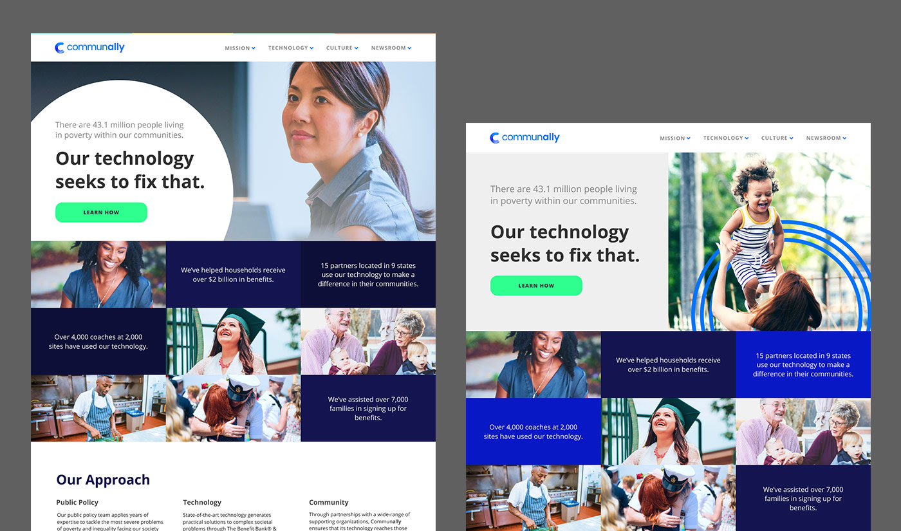

The Benefit Bank
The Benefit Bank is an online service that offers tax filing, benefits application filing, and benefits eligibility screening. It operates in both self-serve and counselor-assisted platforms.
- Role: UX/UI Designer
- Design Tool: Figma
Application Process Paint Job
The outer shell of TBB had been made responsive, but now it was time to tackle the difficult part- the actual application process. Because of time restraints, we wouldn't be able to completely redesign the application, but we could spruce it up a bit and make it slightly less painful to use on smaller screen sizes. The project was affectionately deemed "the paint job".
The Challenge
Most of the application system was built using HTML tables, before all of the modern CSS layout options were widely adopted. We wouldn't be able to go in and rip the tables out at the time, because of the complicated templating system in place. We had to keep essentially the same layout for most pages, but we could tweak things like colors, font styles, etc.
We also wouldn't be able to take a look at each of the hundreds of pages separately. Instead, we just payed special attention to each type of page element (headers, question groups, etc) and did our best to make nice looking lego blocks that would fit together beautifully in the end.
Before
Looking at what was the current application system, I was particularily concerned with the confusing visual heirarchy and spacing users had to grapple with. TBB's goal is to make filing for benefits simple and easy, and while the system offers hints and help to guide the user through the process, the design of many of the pages came close to counteracting that.
I knew I wanted to tighten up the visual heirarchy and to make the design more consistent with the rest of TBB. Using some patterns established from earlier TBB responsive projects, I got to work.

The first (of many) attempts at nailing down a specific style
Exploring the direction I wanted to take the top half of the homepage

Behold, the chosen one
Our winner emerged. It was equally community and tech-focused, exactly what Communally needed. I chose to include a few of our brand stats such as how many people we've helped and where our sites are located, in order to build trust with potential partners and investors.
I ran with the circuit board motif, using a simplified version for CTAs and headers around the site. Images of people representing communities we assisted are also featured prominently.

Who doesn't love a bit of visual sugar?
I created a set of custom icons for this project. Most appear on the careers page, but you can see a few scattered throughout the rest of the site as well. If given the time, I always prefer to create my own icons, giving my projects a unique touch.

The site at a glance

Focused look at the header
This project was a great opportunity to test my rapid prototyping skills, creating quite a few mockups/style boards quickly in order to test concepts and find ones that work.
I used Figma, a collaborative design tool, to create all of the mockups for this project. It was my first time using Figma, but by the end of the project I was an advocate for the tool, leading teams in the company to adopt it for subsequent interface design projects.